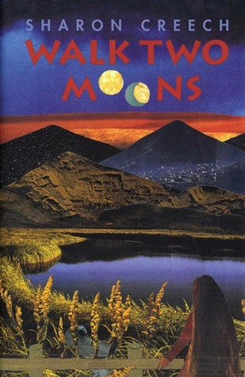

Foods
As a foodie, it's hard to narrow down favorites. I mostly bake too. But the three following are classic to my family: chilled strawberry soup, chocolate chip cookies, and flan.
Strawberry Soup Chocolate Chip Cookies Caramel FlanAs a foodie, it's hard to narrow down favorites. I mostly bake too. But the three following are classic to my family: chilled strawberry soup, chocolate chip cookies, and flan.
Strawberry Soup Chocolate Chip Cookies Caramel FlanMy favorite book that I read as a child was Walk Two Moons.
Salamanca Tree Hiddle, also known as Sal, has recently moved as a result of her parents divorce. Her mother disappeared and her dad decided to rent out their Kentucky farm to move to Ohio. While in Ohio, she embarks on a six-day road trip with her grandparents to Idaho in order to find her mother in time for the Mother's birthday. Woven into the story of the roadtrip is Sal's story of her friend Phoebe, whose mother has disappeared as well. The road trip encompasses a mystery, a quest, and a love story. However, the road isn't as smooth for Sal finding her mother as it was for Phoebe.
Salamanca Tree Hiddle, Phoebe Winterbottom, Sal's Mother, The grandparents.
